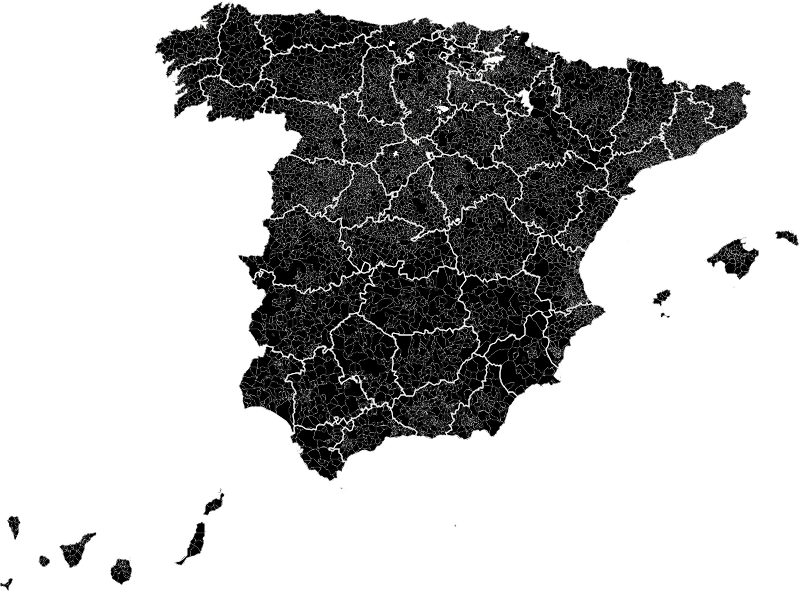
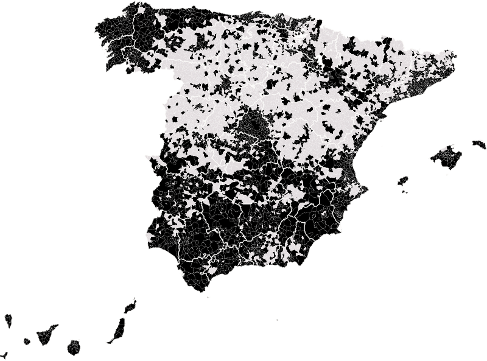

Actualidad · La casa cerrada · España
En 4.441 municipios hay más casas sin vecinos que con ellos
En más de la mitad de los municipios de España, la mayoría de las viviendas no son la casa de nadie: están cerradas, son segundas residencias o se abren unas semanas al año. Hay dos mapas de la casa vacía, el del pueblo del interior y el del apartamento de la costa. A primera vista se parecen al del PP, pero esa coincidencia la explican la edad y la provincia. Lo que sí deja huella es otra cosa: donde hay segundas residencias se vota menos.
Por Nacho G. del Álamo ·

Cada párrafo lleva una etiqueta: dato (cifra comprobable con las fuentes), patrón (relación que se repite, sin afirmar la causa), hipótesis (explicación posible, sin dos fuentes independientes) o contexto (hechos y declaraciones publicados por otros, enlazados). Cómo verificamos
DatoEn Valdeprado, en la provincia de Soria, hay 103 viviendas y ocho vecinos. Noventa y seis de cada cien casas del pueblo no son la residencia habitual de ningún hogar. Ningún municipio de España tiene una proporción más alta.
DatoCasi trescientos kilómetros al sureste, junto al mar, Oropesa del Mar tiene 11.578 habitantes y 29.113 viviendas: dos y media por vecino. El 85% no son la casa principal de nadie. Una de cada tres gastó en 2020 la luz de uno a tres meses de uso. En Peníscola, un poco más al norte, son 81 de cada cien. En Torrevieja, una ciudad de 95.037 habitantes, hay 122.736 viviendas.
ContextoSon las dos caras de la casa vacía. La del pueblo que se quedó con las puertas cerradas cuando sus hijos se fueron a Madrid, a Bilbao o a Barcelona. Y la del apartamento que se abre en agosto. En el mapa se confunden. En las urnas, no.
Ocho millones de casas sin hogar
DatoEl Censo de Población y Viviendas de 2021 contó 26.623.708 viviendas en España. En 18,5 millones vivía un hogar. Las otras 8.087.092, el 30,4%, estaban vacías, eran segundas residencias o se usaban de vez en cuando.
DatoÁvila es la provincia donde más pesan: el 59,4% de sus viviendas no son principales. Le siguen Teruel (56,5%), Soria (54,9%), Cuenca y Zamora (51,1%) y Ourense (51%). En la otra punta están las provincias de las grandes ciudades: Madrid, con el 13,9%, Bizkaia (13,6%) y Barcelona (15,4%).
DatoHay 4.441 municipios, de un total de 8.131, donde las casas sin hogar son mayoría. Casi todos son pequeños: 3.839 tienen menos de mil habitantes. Por eso, aunque son más de la mitad de los municipios del país, en ellos vota solo el 7,6% del censo electoral, unos 2,7 millones de personas.

menos del 20% 80% o más · gris: sin datos
Las provincias, de más a menos
PatrónEl mapa se lee de un vistazo. Una mancha oscura cubre la meseta norte, el Sistema Ibérico, el interior de Galicia y el Pirineo. Otra recorre el Mediterráneo, de la Costa Brava a la Vega Baja del Segura. Las ciudades y sus coronas metropolitanas son islas claras: Madrid, Barcelona, Bilbao, Sevilla, Valencia, Zaragoza.
El contador de la luz
ContextoPara saber qué casas están vacías, el INE no llamó a ninguna puerta. Miró el contador de la luz. Lo explicaba así en su nota de prensa del 30 de junio de 2023:
«A los efectos del Censo 2021 se ha optado por considerar como vivienda vacía a aquella que no dispone de contrato de suministro eléctrico o cuyo consumo total registrado en el año precedente ha sido menor al que una vivienda media de ese mismo municipio tendría si se ocupara durante 15 días en todo el año»
DatoCon ese criterio, 3.828.307 viviendas, el 14,4%, estaban vacías. Otras 2.517.628, el 9,5%, eran de uso esporádico: consumieron entre 251 y 750 kilovatios hora al año, lo que equivale, según el INE, a vivir en ellas de uno a tres meses. Europa Press lo resumió aquel día con la cifra que acabó en todos los periódicos: más de 3,8 millones de viviendas vacías.
ContextoEl INE solo da esta separación para los municipios de más de unos mil habitantes, 3.139 en total. Con ella, el mapa de la casa vacía se parte en dos.
Vacías

menos del 10% 40% o más
De uso esporádico
menos del 6% 20% o más
DatoLas casas vacías, sin apenas consumo, pesan más en Galicia que en ningún otro sitio. En los municipios de Ourense con datos, el 41,2% de las viviendas no gastaron ni la luz de quince días. En los de Lugo, el 36,5%. Después vienen Ciudad Real (27,6%) y las otras dos provincias gallegas. Entre los municipios de más de 20.000 habitantes, el récord es de Tías, en Lanzarote, con el 48,1%, seguido de O Porriño (34,9%) y Mogán (34%).
DatoLas de uso esporádico dibujan otra España: la del veraneo y el fin de semana. Ávila (15,9%) y Cantabria (15,4%) encabezan las provincias, seguidas de Huesca, Castellón y Soria. Es el mapa de la sierra de Gredos, de la costa cántabra, de los valles del Pirineo y del litoral de Castellón. En Oropesa del Mar son el 32,3%; en Peníscola, el 31,7%.
HipótesisEl dato de Canarias pide cautela. En los municipios turísticos, algunos apartamentos que se alquilan a visitantes o que comparten contador pueden aparecer como vacíos. Es un límite del método, no un hallazgo.
ContextoJulián López Colás y Juan Antonio Módenes, del Centre d'Estudis Demogràfics, llevan veinte años estudiando la segunda residencia. En 2004 escribieron que este tipo de casa obliga a repensar qué quiere decir vivir en un sitio:
«La relación habitante-lugar se rompe en estos casos. Así como también se rompe la definición clásica de la "población de un lugar" y se expande una nueva visión a partir de las "poblaciones temporales"»
ContextoEsa ruptura llega hasta la urna. El dueño de un apartamento en Peníscola vota en Zaragoza o en Madrid, donde está empadronado. En agosto llena el pueblo. En noviembre no vota allí.
A primera vista, más PP
DatoSi se ordenan los municipios de menos a más casas no principales y se parten en cinco grupos con el mismo número de votantes, el PP sube de un extremo a otro. En el grupo con menos, donde solo el 9,6% de las viviendas no son principales, sacó el 25,4% de los votos en las generales de julio de 2023. En el grupo con más, donde son el 52,9%, el 37,8%. Sumar baja del 14,3% al 9,7%. El PSOE apenas se mueve: del 33% al 32,5%.
PatrónPero ese gráfico compara sobre todo dos Españas: la de las grandes ciudades, con pocas casas vacías y más voto a la izquierda, y la de los pueblos del interior, envejecidos y con más voto al PP. Las casas vacías van de la mano de la edad: entre municipios, la correlación entre el porcentaje de viviendas no principales y la edad media es de 0,70.
Lo que queda cuando se quita lo demás
DatoSi se repite la comparación dentro de cada provincia, ordenando cada municipio frente a los de la suya, la escalera desaparece. El PP saca el 35% en el grupo con menos casas no principales y el 34,8% en el grupo con más. El PSOE, el 33,2% y el 31,8%. Vox, el 13,8% y el 13%.
DatoCon una regresión que tiene en cuenta a la vez la provincia, la edad media, la renta y el tamaño del municipio, diez puntos más de viviendas no principales se asocian a 0,9 puntos más de PP, 1,2 puntos menos de PSOE, 0,4 más de Vox y 0,2 menos de Sumar. Son diferencias de menos de un punto y medio.
DatoDentro de las ciudades pasa lo mismo. En Madrid, las secciones censales con más pisos no principales votan más al PP: la correlación es de 0,45. En Sevilla, de 0,50. Pero son las secciones más ricas, las del centro y los barrios caros, donde abundan el piso de inversión y la segunda vivienda en la ciudad. Al comparar secciones del mismo municipio con la misma renta, edad y población extranjera, la relación con el PP desaparece.
PatrónLas casas vacías no tienen un partido. Su mapa se parece al del PP porque se parece al de la España envejecida del interior, que vota al PP por otras razones.
La segunda residencia vota menos
DatoLo que sí separa a los municipios es la participación, y depende de qué tipo de casa vacía tengan. Entre los 611 municipios con mayoría de viviendas no principales para los que el INE da el consumo eléctrico, los 238 donde abunda el uso esporádico (el 15% de las viviendas o más) votaron un 68,1% en julio de 2023. Son pueblos de veraneo y de fin de semana: la Costa Brava, la costa de Valencia, Castellón y Cantabria, pero también la sierra de Ávila o de Burgos. Los 373 donde lo que hay son sobre todo casas cerradas, con Ourense, Lugo y Toledo a la cabeza, votaron un 72%. La media de España fue del 70,4%.
Los municipios de más de 20.000 habitantes con más viviendas no principales
DatoEn los extremos, la distancia es mayor. En Roses votó el 58,5% del censo. En Salou, el 59,3%. En Torrevieja, el 60,3%. En Castelló d'Empúries, en el Alt Empordà, el 55,3%. Todos están entre los municipios de su tamaño con más viviendas no principales de España.
DatoLa Costa Brava y la Costa Daurada concentran los casos catalanes. Entre los municipios catalanes de más de 5.000 habitantes, los que tienen más casas no principales son Llançà (73,3%), Castelló d'Empúries (71,5%), L'Escala (71,2%), Castell-Platja d'Aro (68,8%) y Roses (68,2%). En todos ganó el PSC el 23J, y en cuatro de los cinco la participación quedó por debajo de la media catalana, que fue del 65,4%.
Los municipios catalanes de más de 5.000 habitantes con más viviendas no principales
HipótesisHay dos explicaciones posibles, y ninguna está comprobada aquí. Una, que en los municipios turísticos vive más población móvil, con menos arraigo y más cambios de domicilio, un rasgo que la investigación asocia desde hace décadas con votar menos, como mostraron Squire, Wolfinger y Glass en 1987. Otra, que algunos empadronados no viven allí todo el año y no están el día de la votación. Los datos por municipio no permiten separar una de la otra.
Las casas que no van a salir al mercado
ContextoLas casas vacías vuelven a la campaña cada vez que se habla de vivienda. En octubre de 2025, Enrique Santiago, de IU, defendía que había más de un millón de casas vacías que podrían aliviar la falta de vivienda: «No podemos estar enfrentando un problema de esta magnitud cuando hay suficiente oferta», dijo, según Europa Press.
ContextoEl Banco de España había matizado esa idea un año antes, precisamente por el mapa que se ve aquí:
«La capacidad para aumentar la oferta de vivienda mediante la movilización de viviendas vacías sería relativamente limitada, ya que buena parte de las mismas se concentran en las zonas con menor dinamismo demográfico»
PatrónLos datos del censo le dan la razón en lo geográfico: la mayoría de las casas vacías están en pueblos donde no hace falta vivienda, y en la ciudad de Madrid solo el 6,3% de los pisos no tienen consumo eléctrico. En la de Barcelona, el 9,3%.
DatoEn Valdeprado, el 23 de julio de 2023, votaron seis de sus ocho electores. En el resto de las casas del pueblo no vivía nadie que pudiera hacerlo.
Lo que no dicen los datos
HipótesisEste artículo compara lugares, no personas. No sabe cómo votan los dueños de las segundas residencias, que lo hacen donde están empadronados, ni los que viven junto a una casa cerrada. Que un municipio con muchas casas vacías vote al PP no significa que las casas vacías hagan votar al PP: con la edad, la renta y la provincia en la cuenta, la relación casi desaparece.
ContextoHay otros límites. El censo es de enero de 2021 y el voto, de julio de 2023. La clasificación entre vacía y de uso esporádico se basa en el consumo eléctrico, y una casa con placas solares o con un contador compartido puede quedar mal clasificada. Esa separación solo existe para los municipios de más de 1.000 habitantes; por sección censal, el INE solo distingue entre vivienda principal y no principal. Los resultados no incluyen el voto de los residentes en el extranjero.
Preguntas rápidas
¿Dónde hay más viviendas vacías o segundas residencias en España?
Por provincias, en Ávila (59,4% de viviendas no principales), Teruel (56,5%) y Soria (54,9%). Entre los municipios de más de 20.000 habitantes, en San Javier y Torrevieja (70%), Roses (68,2%) y Cullera (67,9%).
¿Cuántas viviendas vacías hay en España?
3.828.307 según el Censo de 2021 del INE, el 14,4% del total, medidas por su consumo eléctrico. Otras 2.517.628 eran de uso esporádico.
¿Se vota más al PP donde hay más casas vacías?
A primera vista sí (37,8% frente a 25,4%), pero la diferencia se debe a la edad, la renta y la provincia. Comparando dentro de cada provincia, el PP saca lo mismo.
¿Se vota menos donde hay segundas residencias?
Sí. Los municipios con mayoría de viviendas no principales y mucho uso esporádico votaron un 68,1% en 2023, frente al 72% de los que tienen sobre todo casas cerradas.
Cómo se hacen estas piezas: Metodología de Actualidad